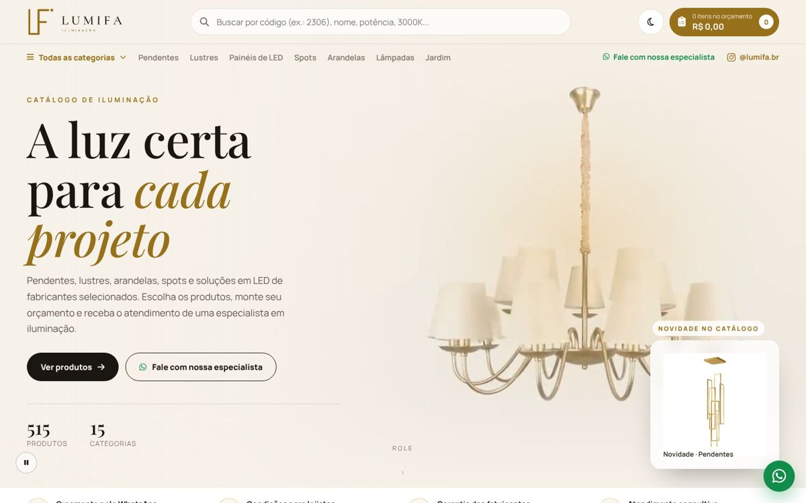
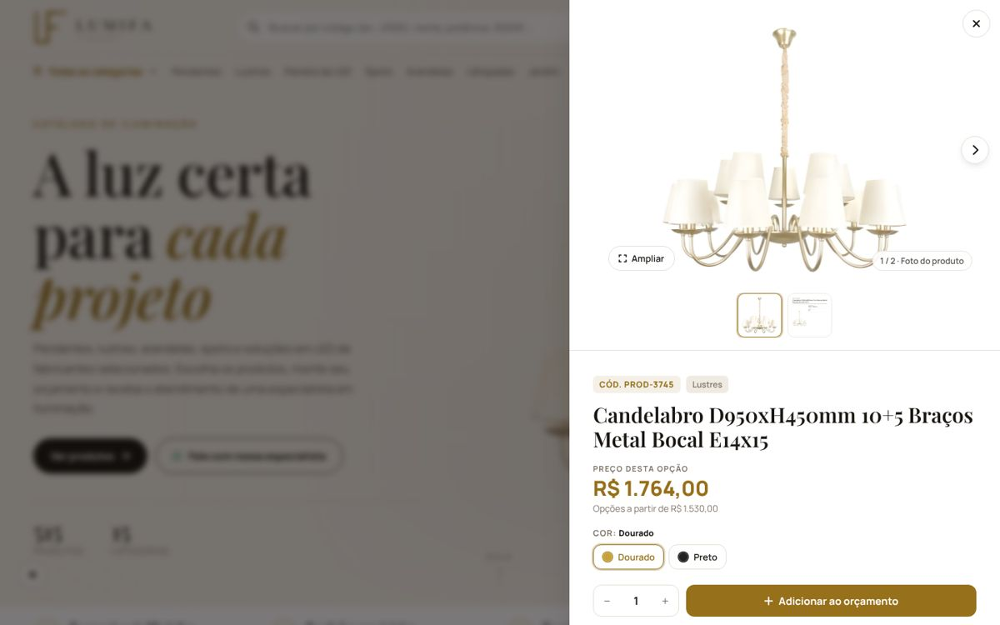
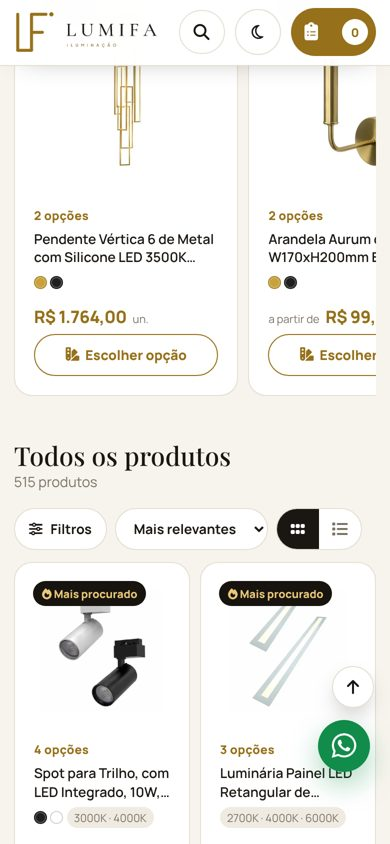
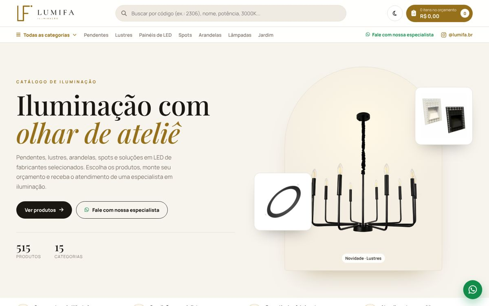
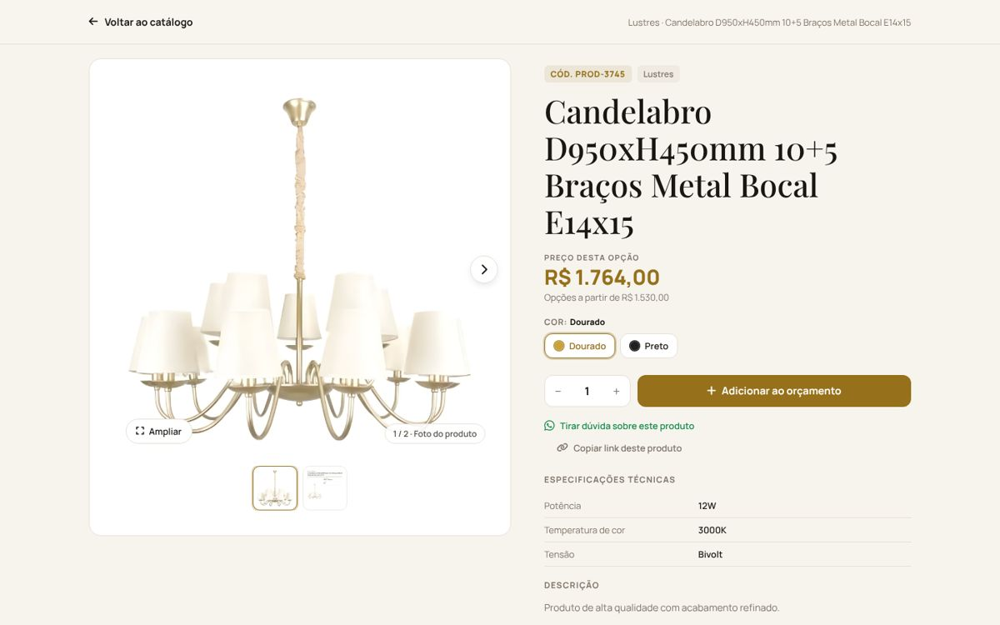
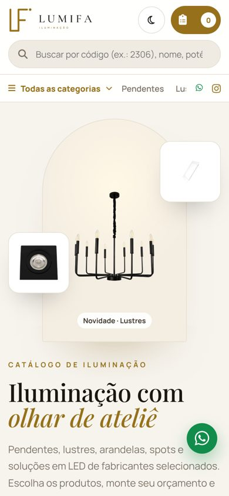
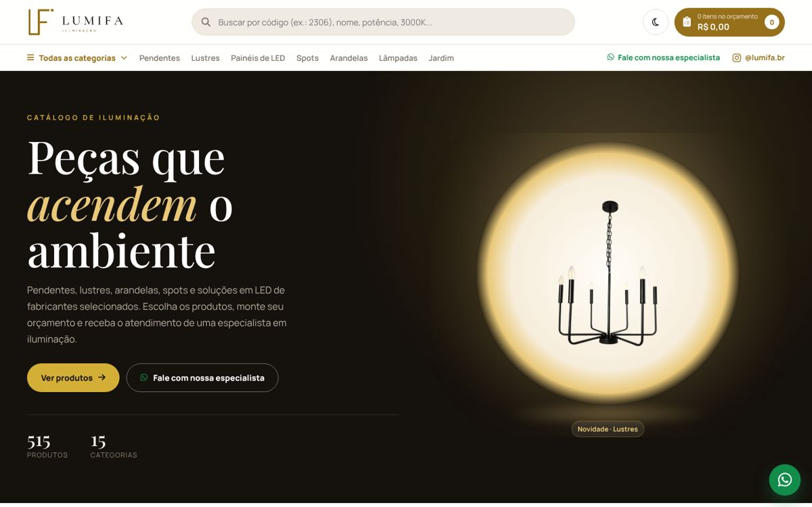
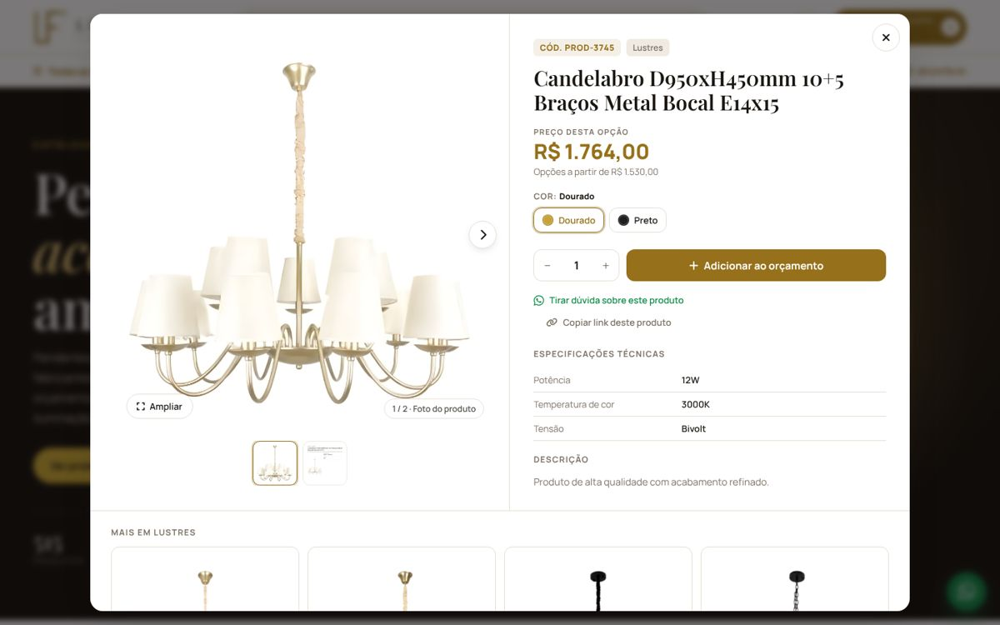
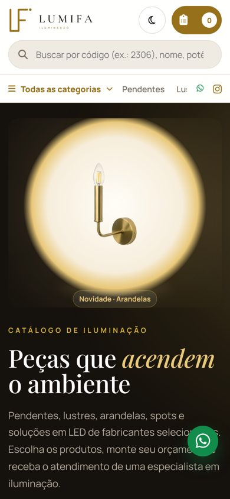

Cinema
vídeo no fundo da capa · produto em painel lateral


É a ideia do vídeo de fundo que vocês gostaram, adaptada para a LumiFa. Fiz o vídeo com as fotos dos próprios produtos (lustre de anéis, candelabro, arandela de cristal, pendentes…) sobre o fundo creme, com um brilho dourado e zoom lento. Ele pesa menos de 0,5 MB, então abre rápido até no 4G.
Se um dia vocês gravarem um vídeo de peças acesas num ambiente real, é só trocar o arquivo e o resto continua igual.
Seções extras
- Faixa de diferenciais
- "Como funciona" em 3 passos
- Área "Revenda com condições de lojista"
- Novidade do catálogo flutuando sobre o vídeo
Galeria
capa editorial em arco · produto em página inteira minha preferida


O mais "revista de decoração": muito respiro, a forma de arco lembra uma cúpula e combina com o estilo Ateliê. As peças da capa trocam sozinhas a cada 7 segundos (como hoje), sempre com novidades.
O produto abre como uma página de verdade: foto grande à esquerda que fica parada enquanto se lê a ficha técnica à direita. É o formato que passa mais confiança para lojista e arquiteto.
Seções extras
- Faixa de diferenciais
- "Luz em movimento": os Reels do Instagram tocando no site (só quando aparecem na tela)
- Área para lojistas
Vitrine
capa escura com "holofote" · cards que acendem


O mais dramático: a capa preta faz a peça parecer acesa numa vitrine à noite. Nos produtos, ao passar o mouse, a foto ganha um brilho quente e o card sobe um pouco, como se a luminária acendesse.
O resto da página continua claro, então a regra de abrir sempre no modo claro está respeitada.
Seções extras
- Faixa de diferenciais
- "Como funciona" em 3 passos
- Reels do Instagram
Minha recomendação: não abrir aba nova
Aba nova costuma atrapalhar num catálogo como o de vocês:
- No celular, a maioria nem percebe que abriu outra aba. O cliente "perde" o catálogo e acha que o orçamento sumiu.
- Quem compara 10 ou 20 peças acaba com 20 abas abertas e desiste.
- O Meu Orçamento funciona melhor numa tela só.
O que os três modelos fazem é abrir o produto dentro do site, mas com endereço próprio. Com isso o cliente tem o melhor dos dois lados: pode mandar o link de um produto pelo WhatsApp, o botão "voltar" do celular fecha o produto e ele cai exatamente onde estava na lista.
Entre as três formas, a página inteira (B) é a que mais passa cara de "site profissional". O painel lateral (A) é o mais rápido para quem compara muitas peças. A janela central (C) é a de hoje, melhorada.
| A · Cinema | B · Galeria | C · Vitrine | |
|---|---|---|---|
| Primeira impressão | Movimento (vídeo) | Elegância, respiro | Impacto, contraste |
| Abrir produto | Painel lateral | Página inteira | Janela central |
| Peso da capa | +0,5 MB (vídeo) | Só fotos | Só fotos |
| Instagram no site | Não | Sim (Reels) | Sim (Reels) |
| Área de lojistas | Sim | Sim | Não (dá para incluir) |
Inspiração, sem cópia
- Nobre Luminárias: vídeo de fundo e caminho claro para lojista → aqui o vídeo é feito com as nossas próprias peças e a área de lojista usa o WhatsApp da LumiFa.
- Lojas de design internacionais: produto com página própria, botão "Inquire" (pedir orçamento) em vez de "comprar" e variações de cor no card → a LumiFa já tinha as variações; agora o produto ganhou link e relacionados.
- Sites de moda e decoração: cabeçalho que se recolhe e busca em lupa ao rolar.
- Nenhum texto, foto, logo ou layout de outra empresa foi usado. Textos, vídeo e formas foram criados para a LumiFa.